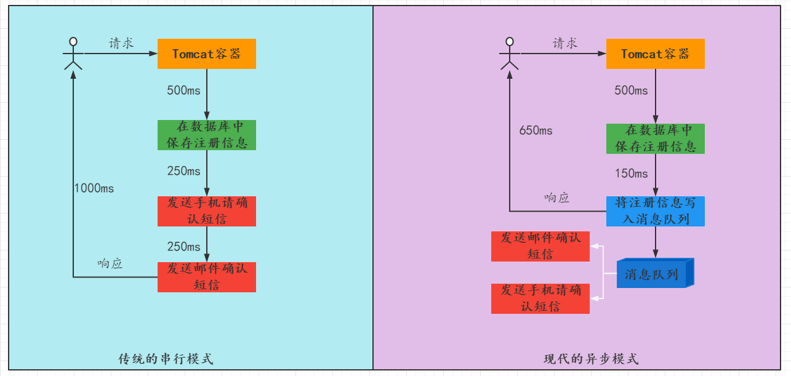
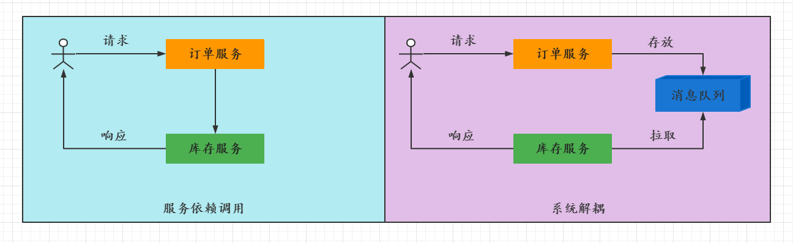
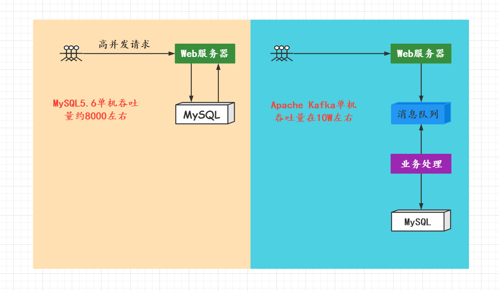
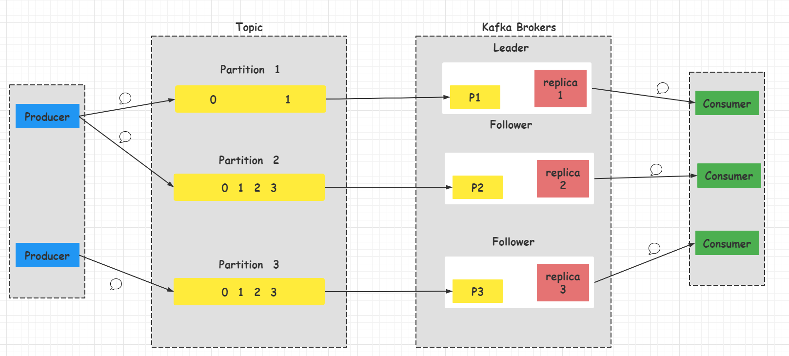
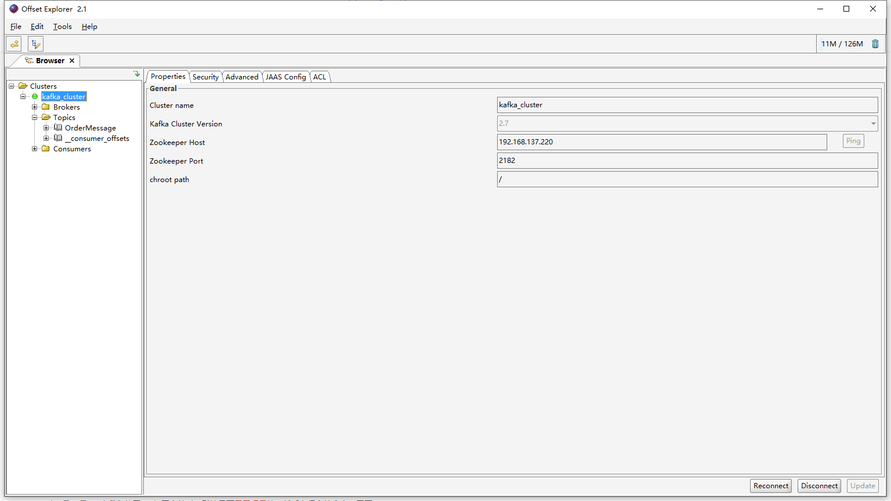

消息中间件——Kafka
Kafka
Kafka是一个分布式的基于发布/订阅模式的消息队列，主要应用于大数据实时处理领域。Kafka一词源于架构师Jay Kreps喜欢的Franz Kafka（弗兰兹·卡夫卡）。
消息队列
消息队列就是用来存储消息的软件（组件）。可以将消息放入到队列中，也可以从消息队列中获取消息。很多时候消息队列不是一个永久性的存储，是作为临时存储存在的（设定一个期限：设置消息在MQ中保存的时间）
常用的消息队列有：Kafka、Active MQ、RabbitMQ、RocketMQ、ZeroMQ
消息队列的应用场景
异步处理
在电商网站中，新的用户注册时，需要将用户的信息保存到数据库中，同时还需要额外发送注册邮件通知、以及短信注册码给用户。在传统的串行模式中，会将这三个步骤全部完成之后响应用户，但是由于注册邮件通知、以及短信注册码给用户需要调用外部的服务实例，可能会有更长的响应时间；在异步模式中，将注册信息写入消息队列后，直接响应用户，发送邮件确认信息与发送短信确认信息允许在一定的延迟之后完成。
可以根据业务的重要程度，进行拆分。使用消息队列，优先保证用户的响应时间。

系统解耦
在微服务系统中，通常一个业务会调用很多个服务来完成。服务于服务之间存在耦合的关系。假如库存服务出现了问题，即使订单服务没有问题用户的请求也会失败；使用消息队列之后，在订单服务正常的情况下就可以给用户响应，而库存服务的正常与否并不影响订单服务的运行。

流量削峰
在双十一秒杀商品以及春运抢票的情况下，会有大量的用户请求达到服务器，而过多的请求将会对数据库造成极大的压力，导致服务最终的崩溃；使用消息队列后通过消息队列来降低对数据库的压力，在这种情况下，所有的业务都可以快速响应用户，将一些不是必要的服务交给消息队列进行处理。

日志处理
大型电商网站都需要去分析用户的行为，要根据用户的访问行为来发现用户的喜好以及活跃情况，需要在页面上收集大量的用户访问信息。

消息队列的两种模式
点对点模式
生产者将消息发送到消息队列中，然后消息者从消息队列中取出并且消费消息。消息被消费之后，消息队列中不再有存储，所以消息接受者不可能消费到已经被消费的消息。

点对点模式的特点：
- 每个消息只有一个接受者（即一旦被消费，消息就不再在消息队列中）
- 发送者和接受者没有依赖性，发送者发送消息之后，不管有没有接受者在运行，都不会影响到发送者下次发送消息
- 接收者在成功接收消息之后需向队列应答成功，以便消息队列删除当前接收的消息
发布/订阅模式
发布订阅模式通常用在流式处理中，有生产者生产消息，消费者订阅该消息。当有消息来的时候就会推送给消费者。

发布订阅模式的特点：
- 每个消息可以有多个订阅者
- 发布者和订阅者之间有时间上的依赖性。针对某一个Topic的订阅者，它必须创建一个订阅者之后才能消费发布者的消息
- 为了消费消息，订阅者需要提前订阅该角色主题，并保持在线运行
Kafka简介
Kafka是由Apache软件基金会开发的一个开源流平台，有Scala和Java编写。一个分布式流平台应该包含的三个关键能力：
- 发布和订阅流数据，类似消息队里而活着是企业消息传递系统
- 以容错的持久化方式存储数据流
- 处理数据流
Kafka基础概念

broker
kafka集群包含一个或多个服务器，服务器节点称为broker。broker存储Topic数据：
- 如果某个Topic有N个Partition，集群中有N个broker，那么每一个broker存储该topic的一个Partition；
- 如果某个Topic有N个Partition，集群有N+M个broker，那么其中N个broker存储该Topic的Partition，剩下的M个不存储该Topic的Partition数据
- 如果某个Topic有N个Partition，集群中broker的个数少于N个，那么一个broker存储该topic的一个或多个Partition（在实际生产中，应该尽量避免这种情况出现，会导致数据不平衡的现象）
topic
每条发布到Kafka集群的消息都有一个类别，这个类别称之为Topic。物理上不同Topic的消息分开存储，逻辑上一个Topic的消息虽然保存与一个或者多个broker上，但用户只需要指定消息的Topic即可生产或者消费数据而不必关心数据存于何处。
Partition
Topic中的数据分割为一个或多个Partition。每个Topic至少有一个Partition，每个Partition中的数据使用多个Segment文件存储。Partition中的数据是有序的，不同Partition间的数据丢失了数据的顺序。如果多个Partition的情况下，消费数据就不能保证数据的顺序。(在需要严格保证消息顺序的场景下，需要将partition数目设为1)
Producer
数据的发布者，该角色将消息发布到Kafka的Topic中，broker接收到生产者发送的消息后，broker将该消息追加到当前用于追加数据的Segment文件中。生产者发送的消息，存储到一个Partition中，生产者也可以指定数据存储的Partition
Consumer
消费者可以从broker中读取数据，消费者可以消费多个topic中的数据
Leader
每个Partition都有多个副本，其中有且仅有一个作为Leader，Leader是当前负责数据读写的Partition
Follower
Follower跟随Leader，所有写请求都通过Leader路由，数据变更会广播给所有的Follower，Follower与Leader保持数据同步。如果Leader失效，则从Follower中选举出一个新的Leader。当Follower与Leader都挂掉、卡住或者同步太慢，Leader会把这个Follower从列表中删除，重新创建一个Follower
Kafka伪集群搭建
下载地址：https://kafka.apache.org/downloads，选择Binary Download其中一个就可以了。
服务器环境：Cetenos 7.6（因为只有一台云服务器，所以只有只能搭建伪集群）
# 下载好之后将文件解压到 /opt 文件夹内
[root@localhost ~]# tar -zvxf kafka_2.12-2.8.0.tgz -C /opt
# 将安装好的文件夹名称修改,修改文件夹名称的时候注意保留版本号，这里因为是我自己测试图省事
[root@localhost ~]# mv kafka_2.12-2.8.0.tgz kafka此时就可以Kafa就安装好了，修改其配置文件，让其按照配置文件启动就可以了
# 进入配置文件所在的目录
[root@localhost kafka]# cd config/
# 将原始配置文件复制三分
[root@localhost config]# cp server.properties server1.properties
[root@localhost config]# cp server.properties server2.properties
[root@localhost config]# cp server.properties server3.properties将配置文件复制三份之后，针对其中的配置做出修改：
# server1.properties
# broker的唯一标识，每一个Kafka服务的实例都不应该一样
broker.id=0
# kafka服务的IP地址以及端口号
listeners=PLAINTEXT://127.0.0.1:9092
# 设置日志存储的目录
log.dirs=/opt/kafka/log/kafkalogs1
# 设置连接ZK的服务的地址
zookeeper.connect=localhost:2181,localhost:2182,localhost:2183# server2.properties
# broker的唯一标识，每一个Kafka服务的实例都不应该一样
broker.id=1
# kafka服务的IP地址以及端口号，注意修改端口不要一致，否则服务启动不了
listeners=PLAINTEXT://127.0.0.1:9093
# 设置日志存储的目录
log.dirs=/opt/kafka/log/kafkalogs1
# 设置连接ZK的服务的地址
zookeeper.connect=localhost:2181,localhost:2182,localhost:2183# server3.properties
# broker的唯一标识，每一个Kafka服务的实例都不应该一样
broker.id=1
# kafka服务的IP地址以及端口号，注意修改端口不要一致，否则服务启动不了
listeners=PLAINTEXT://127.0.0.1:9094
# 设置日志存储的目录
log.dirs=/opt/kafka/log/kafkalogs1
# 设置连接ZK的服务的地址
zookeeper.connect=localhost:2181,localhost:2182,localhost:2183此时所有的配置都完成了，但是我们还没有创建存储日志对应的文件夹
# 创建日志对应的文件夹
[root@localhost kafka]# mkdir kafkalogs1
[root@localhost kafka]# mkdir kafkalogs2
[root@localhost kafka]# mkdir kafkalogs3所有的配置都完成以后就可以启动对应的服务：
# 后台启动三个服务
[root@localhost kafka]# bin/kafka-server-start.sh -daemon conf/server1.properties
[root@localhost kafka]# bin/kafka-server-start.sh -daemon conf/server2.properties
[root@localhost kafka]# bin/kafka-server-start.sh -daemon conf/server3.properties所有的这些都完成了以后，可以在Zookeeper服务中查看当前Kafka集群是否搭建正确。使用Zookeeper客户端进入会发现在Zookeeper中创建了很多的节点
# 我这里直接这样写是因为我配置了ZK的环境变量
[root@localhost config]# zkCli.sh -server localhost:2182
# 查看根节点可以看到Kafka创建了很多的节点以供我们使用
[zk: localhost:2182(CONNECTED) 0] ls /
[admin, brokers, cluster, config, consumers, controller, controller_epoch, feature, isr_change_notification, latest_producer_id_block, locks, log_dir_event_notification, servers, zookeeper]
# 查看 /brokers/ids 下面的子节点可以看到 broker为0,1,2的kafka的服务已经搭建完成了
[zk: localhost:2182(CONNECTED) 1] ls /brokers/ids
[0, 1, 2]Kafka的使用
创建一个Topic
在bin文件夹下存在一个kafka-topic.sh是用于创建一个Topic的，replication-factor表示副本数量；partition表示要存储在哪个Partition中；zookeeper表示Zookeeper服务的地址和端口号。
[root@localhost kafka]# bin/kafka-topics.sh --topic OrderMessage --replication-factor 1 -partition 1 --zookeeper localhost:2182查看Topic
[root@localhost kafka]# bin/kafka-topics.sh --list --zookeeper localhost:2182
OrderMessage生产者与消费者通信
# 使用Xshell连接的时候出新建一个窗口
# 进入kafka文件夹，开启一个生产者
[root@localhost kafka]# bin/kafka-console-producer.sh --broker-list localhost:9092 --topic OrderMessage# 使用Xshell连接的时候出新建一个窗口
# 进入kafka文件夹，开启一个消费者
[root@localhost kafka]# bin/kafka-console-consumer.sh --bootstrap-server localhost:9092,localhost:9093,localhost:9094 --topic OrderMessage
此时在生产者这边输入消息，可以在消费者这边看到消息被消费掉了。
删除Topic
[root@localhost kafka]# ./bin/kafka-topics.sh --delete --topictopic_name ip:9092 --topic myTopic --from-beginning --group default_groupKafka可视化工具
Kafka可视化工具有很多种，常用的有Kafka-Tools、Kafka-Manager、Kafka-Monitor等等，其中Kafka-Tools是最多人使用的。
下载地址：https://www.kafkatool.com/download.html
下载对应的版本之后，一路安装即可。
下载安装完毕之后，要注意：先要开启Kafka的远程连接。Kafka是默认不使用远程连接的，在配置文件修改以下两行就可以了：
23 ############################# Socket Server Settings #############################
24
25 # The address the socket server listens on. It will get the value returned from
26 # java.net.InetAddress.getCanonicalHostName() if not configured.
27 # FORMAT:
28 # listeners = listener_name://host_name:port
29 # EXAMPLE:
30 # listeners = PLAINTEXT://your.host.name:9092
31 listeners=PLAINTEXT://:9092
32
33 # Hostname and port the broker will advertise to producers and consumers. If not set,
34 # it uses the value for "listeners" if configured. Otherwise, it will use the value
35 # returned from java.net.InetAddress.getCanonicalHostName().
36 advertised.listeners=PLAINTEXT://192.168.137.220:9092此时重启服务，即可远程连接Kafka服务。现在打开Kafka-Tools进行连接即可：

在Advanced选项卡中，BootStrap servers输入Kafka集群的IP地址即可：ip1:9092,ip2:9092,ip3:9092
此时进行连接，就可以对Kafka集群中的Topic、Partition进行查看。
Java API的使用
首先引入依赖：
<!--Kafka客户端-->
<dependency>
<groupId>org.apache.kafka</groupId>
<artifactId>kafka-clients</artifactId>
<version>2.8.0</version>
</dependency>
<!--工具类-->
<dependency>
<groupId>org.apache.commons</groupId>
<artifactId>commons-io</artifactId>
<version>1.3.2</version>
</dependency>
<!--桥接日志-->
<dependency>
<groupId>org.slf4j</groupId>
<artifactId>slf4j-log4j12</artifactId>
<version>1.7.30</version>
</dependency>
<dependency>
<groupId>log4j</groupId>
<artifactId>log4j</artifactId>
<version>1.2.17</version>
</dependency>其核心依赖是kafka-client客户端。
生产者程序开发
生产者开发步骤
- 创建用于连接Kafka的Properties配置，其中各项配置为含义如下：
- bootstrap.server —— 表示kafka服务器的地址，假如是集群就要像写Zookeeper集群一样，多个IP地址之间用逗号分隔，不可以出现空格。
- acks —— 表示当生产者数据到达Kafka的时候，Kafka会以什么样的策略返回
- key.serializer —— Kafka中的消息是以key-value的形式存储的，而且生产者生产的消息需要在网络上传输的，常用有StringSerializer序列化器，就是以字符串的形式传输，还有一些其他的序列化的框架：Google ProtoBuf、Avro
- value.serializer —— 类似key.serializer
- 创建有一个生产者对象KafkaProducer
- 发送1-10的消息到指定的topic中。调用KafkaProducer的
send()方法将消息发送到指定的Topic。send()方法的参数是一个ProducerRecord，所以需要将消息封装成一个ProducerRecord。该方法会返回一个Future的对象，调用其get()方法表示阻塞等待Kafka服务器接收消息之后的返回。 - 关闭生产者
package org.itcast.kafka;
import org.apache.kafka.clients.producer.KafkaProducer;
import org.apache.kafka.clients.producer.ProducerRecord;
import org.apache.kafka.clients.producer.RecordMetadata;
import java.util.Properties;
import java.util.concurrent.ExecutionException;
import java.util.concurrent.Future;
/**
* @program:KafkaStudy
* @description:Kafka生产者
* @author:Mr.Pan
* @create:2021-08-09 11:11:01
*/
public class Producer {
public static void main(String[] args) throws ExecutionException, InterruptedException {
//1、创建Kafka配置
Properties props=new Properties();
props.put("bootstrap.servers","192.168.137.220:9092,192.168.137.220:9093,192.168.137.220:9094");
props.put("acks","all");
props.put("key.serializer","org.apache.kafka.common.serialization.StringSerializer");
props.put("value.serializer","org.apache.kafka.common.serialization.StringSerializer");
//2.创建一个生产者对象
KafkaProducer<String, String> producer = new KafkaProducer<>(props);
for (int i = 0; i <10 ; i++) {
//3、组装一条消息
ProducerRecord<String, String> re = new ProducerRecord<String, String>(
"OrderMessage",
null,
i+""
);
// 4、发送一条消息
Future<RecordMetadata> future = producer.send(re);
future.get();
System.out.println("第"+i+"条消息写入成功");
}
producer.close();
}
}异步生产者程序开发
在开发过程中，我们常常需要知道生产者的消息是否生产成功，以便我们在生产成功之后执行一些其他业务落户，此时可以很方便的使用带有回调函数来发送消息。
使用回调函数就是构建ProducerRecord的时候传入一个回调函数即可
Future<RecordMetadata> future = producer.send(re, new Callback() {
@Override
public void onCompletion(RecordMetadata recordMetadata, Exception e) {
if(e==null){
//表示发送消息成功
String topic = recordMetadata.topic();
int partition = recordMetadata.partition();
long offset = recordMetadata.offset();
System.out.println("topic: "+topic+",分区id:"+partition+",offset:"+offset);
}else {
//表示发送消息失败
System.out.println("消息发送失败");
System.out.println(e.getMessage());
}
}
});在成功的时候会调用该Callback接口中的onCompletion()方法。
消费者程序开发
Kafka是一种拉消息模式的消息队列，在消费者中会有一个offset，表示从哪条消息开始拉取数据。
package org.itcast.kafka;
import org.apache.kafka.clients.consumer.ConsumerRecord;
import org.apache.kafka.clients.consumer.ConsumerRecords;
import org.apache.kafka.clients.consumer.KafkaConsumer;
import org.apache.kafka.common.protocol.types.Field;
import java.time.Duration;
import java.util.Arrays;
import java.util.Properties;
/**
* @program:KafkaStudy
* @description:Kafka消费者
* @author:Mr.Pan
* @create:2021-08-10 11:11:06
*/
public class Consumer {
public static void main(String[] args) {
//1、配置消费者的配置文件
Properties properties=new Properties();
properties.setProperty("bootstrap.servers","192.168.137.220:9092,192.168.137.220:9093,192.168.137.220:9094");
//消费者组—— 可以使用消费者组将若干个消费者组织到一起，共同消费Kafka中的Topic的数据
//每一个消费者需要指定一个消费者组，如果消费者组的名是一样的，表示这几个消费者是一个组中的
properties.setProperty("group.id","OrderMessage");
//自动提交offset
properties.setProperty("enable.auto.commit","true");
//自动提交offset的时间间隔
properties.setProperty("auto.commit.interval.ms","1000");
//反序列化机制
properties.setProperty("key.deserializer","org.apache.kafka.common.serialization.StringDeserializer");
properties.setProperty("value.deserializer","org.apache.kafka.common.serialization.StringDeserializer");
//2、创建一个消费者
KafkaConsumer<String, Field.Str> consumer = new KafkaConsumer<>(properties);
//3、订阅一个主题
consumer.subscribe(Arrays.asList("OrderMessage"));
//4、使用一个While循环，不断从Kafka中拉取消息
while (true){
ConsumerRecords<String, Field.Str> consumerRecords = consumer.poll(Duration.ofSeconds(5));
//5、将消息迭代都打印
for (ConsumerRecord<String, Field.Str> consumerRecord : consumerRecords) {
System.out.println("主题名称："+consumerRecord.topic());
System.out.println("这消息位于Kafka分区的偏移位置："+consumerRecord.offset());
System.out.println("Key："+consumerRecord.key());
System.out.println("value"+consumerRecord.value());
}
}
}
}Kafka幂等性与事务
幂等性原本是数学上的概念，表示$f(x)=f(f(x))$能够成立的函数。在编程领域则意味着：对同一个系统，使用同样的调教，一次请求和重复多次请求对系统资源的影响是一致的。
幂等性是分布式系统设计中十分重要的概念，具有这一性质的接口在设计时会具备这种理念：调用接口发生异常并且重复尝试时，总会造成系统无法承受的损失，所以必须阻止这种现象的发生。
幂等性常用的思路：
MVCC
多版本并发控制，乐观锁的一种实现，在数据更新时需要去比较持有数据的版本号，版本号不一致的操作无法成功。
去重表
利用数据库表单的特性来实现幂等性，在表上构建一个唯一索引，保证某一类数据一旦执行完毕，后续同样的请求再也无法成功写入
TOKEN机制
为每一次操作生成一个唯一性凭证，也就是token。一个token在操作的每一个阶段只有一次执行群，一旦执行成功则保存执行结果。对重复的请求，返回同一个结果。
Kafka生产者的幂等性
为了实现生产者的幂等性，Kafka引入了Producer ID和Sequence Number的概念：
- PID —— 每一个Producer在初始化的时候，都会分配一个唯一的PID，这个PID对用户来说是透明的
- Sequence Number —— 针对每个生产者对应的PID发送到指定主题分区的消息都对应一个从0开始递增的Sequence Number。

当Kafka的生产者生产消息的时候，会增加一个PID和Sequence Number，发送消息的时候会将PID和Seq一起发送给Kafka。Kafka接收消息，会将消息的PID和Seq保存下来，如果ack响应失败，生产者重试，再次发送消息时，Kafka会根据PID、Seq判断是否需要再保存一条消息。判断的条件就是：生产者发送过来的Seq是否小于等于partition中消息对应的Seq，是则不保存；不是则保存。
Kafka事务
事务可以保证Kafka在Exactly Once语义基础上，生产和消费可以跨分区和会话，要么全部成功，要么全部失败。
Producer事务
为了实现跨分区跨会话事务，需要引入一个群居唯一的Transaction ID并将Producer获得的PID和Transaction ID绑定。这样Producer重启后就可以通过正在进行的Transaction ID来获得原来的PID。
Producer<String, String> producer = new KafkaProducer<String, String>(props);
// 初始化事务，包括结束该Transaction ID对应的未完成的事务（如果有）
// 保证新的事务在一个正确的状态下启动
producer.initTransactions();
// 开始事务
producer.beginTransaction();
// 消费数据
ConsumerRecords<String, String> records = consumer.poll(100);
try{
// 发送数据
producer.send(new ProducerRecord<String, String>("Topic", "Key", "Value"));
// 发送消费数据的Offset，将上述数据消费与数据发送纳入同一个Transaction内
producer.sendOffsetsToTransaction(offsets, "group1");
// 数据发送及Offset发送均成功的情况下，提交事务
producer.commitTransaction();
} catch (ProducerFencedException | OutOfOrderSequenceException | AuthorizationException e) {
// 数据发送或者Offset发送出现异常时，终止事务
producer.abortTransaction();
} finally {
// 关闭Producer和Consumer
producer.close();
consumer.close();
}分区与副本机制
生产者分区写入策略
生产者写入消息到Topic，Kafka将依据不同的策略将数据分配到不同的分区中，常用的策略有：
- 轮询分区策略
- 随机分区策略
- 按key分区策略
- 自定义分区策略
轮询分区策略
轮询是默认的分区策略，也是使用最多的分区策略，可以最大限度的保证所有消息平均的分配在每一个分区。如果在生产消息时，key为null，则使用轮询算法均衡地分配分区。
随机分区策略
随机是已经弃用的分区策略，每次都将消息随机的分配到每个分区。在较早的版本，默认的分区策略就是随机策略。但是随机分区策略存在严重的数据倾斜的问题。
按Key分区策略
在生产消息的时候为消息设置了key，就会按照key进行分区。在使用key分区的标准，就是将key的hashcode值对分区的数量进行取余，来确定消息在哪一个分区中。使用key分区策略，一样会带来数据倾斜的问题，当某一个key的数据非常多的时候，就会导致该分区内的消息很多，但是其他分区内的消息很少。
Kafka消息的乱序问题：在生产者发送消息的时候，通常会使用轮询策略，将一段消息发送到多个Partition中。假如是一段连续的消息，会被发送到多个Partition中会导致消息在多个Partition是乱序的。但是在某一个Partition中是有序的。如果我们要实现消息有序，可以将连续的消息放到一个Partition中。
消费者组的Rebalance机制
Kafka中的Rebalance机制称之为再均衡，是Kafka确保Consumer Group下所有的Consumer如何达成一致，分配订阅Topic的每个分区的机制。
Rebalance触发的时机
- 消费者组中的Consumer的个数发生了变化。例如：有新的Consumer假如到消费者组，或者是某个Consumer停止了。
- 订阅的Topic个数发生了变化。消费者可以订阅多个主题，当订阅的主题组中有被删除或者被新添加的topic
- 订阅的Topic的分区数量发生了变化。
Rebalance带来的不良影响
- 发生Rebalance时，Consumer group下所有的Consumer都会协调在一起共同参与，Kafka使用分配策略尽可能达到最公平
- Rebalance过程会对Consumer Group产生非常中的影响，Rebalanc过程中所有的消费者都将停止工作，知道Rebalance完成
消费者分配分区策略
Range范围分配策略
Kafka默认的分配策略，它可以确保买个消费者的分区数量是均衡的。(Range范围分配策略是针对每个Topic的)
配置方式：
props.put("partition.assignment.strategy","org.apache.kafka.clients.consumer.RangeAssignor");算法公式：
$n= 分区数量 \div 消费者数量$
$m = 分区数量\ % \ 消费者数量$
前$m$个消费者消费$n+1$个，剩余消费者消费$n$个
示例：
假如TopicA有8个分区，Consumer Group中有3个Consumer，所以：
$n=8\div3=2$
$m=8\ % \ 3=2 $
所以前面两个消费者消费3个分区，最后一个消费者消费2个分区。

RoundRobin轮询策略
RoundRobinAssignor轮询策略是将消费者组内所有消费者以及消费者所订阅topic的partition按照字典排序（topic和分区的hashCode进行排序），然后通过轮询的方式逐个将分区以此分配给每个消费者。
配置方式：
props.put("partition.assignment.strategy","org.apache.kafka.clients.consumer.RoundRo");
Stricky粘性分配策略
引入此类分配策略的目的是：分区分配尽可能均匀；在发生Rebalance的时候，分区分配尽可能与上依次分配保持相同。没有发生Rebalance的时候，与RoundRobin轮询策略类似。
在RoundRobin的分配策略中，假如发生了Rebalance，会将所有的Partition进行重新分配，此时Consumer消费的Partition会发生很大的改变。例如上图中，假如Consumer3宕机了，此时Consumer1消费的Partition：从【11,24,23】 => 【11,13,21,23】；Consumer2消费的Partition：从【12,21,24】=> 【12,14,22,24】。引入粘性分配策略之后，在发生Rebalance的时候，并不会将所有的Partition进行重新分配，而是将挂掉的Consumer对应的Partition进行重新分配。此时：
Consumer1消费的Partition：从【11,24,23】=> 【11,13,14,23】
Consumer2消费的Partition：从【12,21,24】=> 【12,21,22,24】
从而保证在Rebalance的时候算法的开销是最小的。

副本机制
副本的目的是冗余备份，当某个Broker上的分区数据丢失时，依然可以保障数据可用，因为其在其他Broker上的副本是可用的。副本之间存在Leader和Follower的角色，为了确保消费者消费的数据是一致的，只能从分区Leader去读写消息，Follower做的事情就是数据同步，在Ledaer失效的时候称为Ledaer，保证Kafka集群的可用性。
Producer的Acks参数
对于副本来讲，就是在Producer配置中的acks参数，其中acks参数表示当生产者生产消息的时候，写入到副本的要求严格程度。它决定了生产者如何在性能和可靠性之间进行取舍。
配置方式：
props.put("acks","all");acks配置为0
不等待broker确认，直接发送下一条数据，性能最高，但可能会存在数据丢失的情况。
acks配置为1
等待Leader副本确认接收后，才会发送下一条数据，性能中等
acks配置为-1或者all
等待所有的副本都已经将数据同步后，才会发送下一条数据，性能最慢
Kafka原理
分区Ledaer和Follower
在Kafka中，每个Topic都可以配置多个分区以及多个副本，每个分区都有一个Leader以及0个或者多个Follower，在创建Topic时，Kafka会将每个分区的leader均匀地分配在每个broker上。在正常使用的情况下是感受不到Follower和Leader的存在，但是：所有的读写都是由Leader处理的，而所有的follower都复制Leader的日志数据文件，如果Leader出现故障时，Follower就会被选举成为Ledaer。
在实际环境中，leader有可能出现一些故障，所以Kafka一定会选举出新的Leader。选举新的Ledaer之前会首先把Follower按照状态分成三类：
AR
分区的所有副本都称为AR（Assigned Replicas —— 已经分配的副本）
ISR
所有与Ledaer保持一定程度同步的副本（包括leader副本在内）组成ISR（In Sync Replicas —— 在同步中的副本）
OSR
由Follower副本同步滞后过多的副本（不包括leader副本）组成OSR（Out-of-Sync Replicas）
Controller介绍
Kafka启动时，会在所有的broker中选择一个Controller。创建topic、或者添加分区、修改副本你数量之类的管理任务都是由Controller完成的，Kafka分区leader的选举，也是由Controller完成的。
查看Controller在哪个Broker中：
使用Kafka-Tools来完成，点击Kafka-Tools的工具栏中的Tools选项，选择Zookeeper Browser选项，在弹出的选项卡中选择Controller即可。

根据brokerid属性，可以看到在当前集群中Controller的位于broker为0的服务中。此时在服务器中kill -9杀掉brokerid为0的kafka进程，再次点击Controller选项，可以看到此时brokerid为2。Controller依旧具备选举的机制，其中选举是依赖于ZK的。
Controller选举Partition的Leader
- 所有的Partition选举都是由Controller决定的
- Controller会将Leader改变直接通过RPC的方式通知需为此做出响应的Broker
- Controller读取到当前分区的ISR，只要有一个Replicas还幸存，就选择其中一个作为Leader，否则任意选一个Replica作为Leader。
- 如果该Partition的所有Replica都已经宕机了，则新的Leader为-1
在生产环境下，假如我们的某个broker节点挂掉了，就可能导致Partition的Leader分布不均匀，就是一个Broker上存在一个Topic下多个Partiton的Leader。可以使用Kafka中自带的脚本来让多个Partition的Leader均匀的分配在每一个Broker上。
bin/kafka-leader-election.sh --bootstrap.server localhost:9093 --topic OrderMessage --partition=2 --election-type prefferdKafka的读写过程
数据写入流程

- 生产者会先从Zookeeper的
/brokers/topics/OrderMessage/partition/0/state节点找到该partition的leader，其中OrderMessage表示主题的名称，0表示分区的名称。 - 生产者将写入的消息发送给Leader所在的节点
- Leader将生产者发送来的消息写入服务对应的日志文件中（实际上就是数据文件，Kafka就是以日志文件的形式存储数据）
- Follower通过拉取Leader中的消息，并将其写入到自己所在Broker中的日志文件
- Follower写入成功之后返回一个ACK给Leader
- Leader通过Producer设置的acks参数来判断需要等待多少个Follower的ACK，满足条件之后返回一个ACK给Producer
数据消费流程

- 每个Consumer都可以根据分配策略，获得要消费的分区。然后在ZK中获取到对应的offset
- 找到该分区和offset的信息之后就可以直接去分区所在的Broker中拉取数据
- Leader在接收到消费的请求之后，去日志文件读取到对应的数据
- Consumer获取消息消费之后要去更新ZK中的offset
Kafka的数据存储形式
在Kafka中一个Topic由多个分区组成，一个分区由多个Segment段组成，一个Segme端由多个文件组成。

Kafka的数据是保存在我们配置文件中的log.dir属性对应的文件夹中，消息是保存在以【主题名-分区ID】的文件夹中。数据文件夹包含三个文件：
- 以.index结尾 —— 索引文件，根据offset查找数据就是通过该索引
- 以.log结尾 —— 日志数据文件
- leader-epoch-checkpoint —— 持久化每个Partition Leader对应的LEO（log end offet，日志文件中下一条待写入消息的offset）
刚进入文件夹的时候回发现.index和.log结尾的文件的文件名是以00000000000000000000来命名的，因为测试的每个分区的消息达不到每个日志文件的存储的极限，实际意义是
每个日志文件的文件名为其实偏移量，当日志文件达到存储的极限，就会新生成一个日志文件，新生成的日志文件就会以起始偏移量来命名。
修改日志文件的容量大小：
bin/kafka-topic.sh --create --zookeeper localhost:2181,localhost:2182,localhost:2183 --topic test_10m --replication-fator 2 --partition 3 --config segment.bytes=10485760即可新创建一个Topic，并且包含三个分区，每个分区具备两个副本，设置日志文件的大小限制为10M。
Kafka数据不丢失机制
Kafka中的数据如果不丢失，需要满足三种情况：
- Broker数据不丢失 —— 设置合理的分区数量以及副本数量，即使某个Broker Cash依旧可以保证数据不丢失
- 生产者数据不丢失 —— 设置acks参数为-1或者ALL，保证每一条消息都写入到了所有的副本中
- 消费者数据不丢失 —— 要合理的保存offset的值，每一次的更新offset尽量与消息消费封装成原子性的操作。
数据积压
Kafka消费者消费数据的速度是非常快的，但是如果由于处理Kafka消息时，由于有一些外部IO、或者产生网络拥堵，就会造成Kafka中的数据积压（或称为数据堆积）。如果数据一直堆积，会导致数据出来的实时性受到较大的影响。其中常用的数据积压的情况有：
- 数据写入MySQL失败
- 因为网络延迟消费失败
日志清理
Kafka的消息存储在磁盘中，为了控制磁盘的占用空间，Kafka需要不断对过去的一些消息进行清理工作。kafka的每个分区都有很多的日志文件，这样也是为了方便日志的清理。Kafak清理日志有两种方式：
- 日志删除 ： 按照指定的策略直接删除不符合条件的日志
- 日志压缩 ： 按照消息的Key进行整合，有相同Key的但有不同value值，只保留最后一个版本
在Kafka中的broker或topic中配置以下选项可以达到日志清理的目的：
log.cleaner.enable—— 开启器自动清理日志功能【true/false】log.cleanup.policy—— 删除日志的策略，删除还是压缩，或者即删除也压缩。默认值【delete/compaction】
日志删除
日志删除时以Segment为单位进行删除的。Kafka日志管理器会有一个专门的日志删除任务来定期监测和删除不符合保留条件的日志分段文件，这个周期可以通过broker的参数log.retention.check.interval.ms来配置，默认值为300000ms。即五分钟，当前日志分段的保留策略有三种：
基于日志时间的保留策略
通过配置日志存活时间来决定哪些数据会被删除。可配置项有：
log.retention.hourslog.retention.minuteslog.retention.ms其中优先级最后为毫秒的配置，默认情况下的配置是【log.retention.hours=168】即七天的时间。删除日志分段的步骤：
- 从日志文件对象中所维护的日志分段的跳跃表中移出待删除的日志分段，以保证没有线程对这些日志分段进行读取操作
- 将日志分段文件添加上
.delete的后缀（也包括日志分段对应的索引文件） - Kafka后台定时任务会定期删除这些.delete后缀的文件，这个任务延迟执行时间可以通过
file.delete.delay.ms参数来设置，默认为60000，即1分钟。
基于日志大小的保留策略
基于起始偏移量的保留策略
 wechat
wechat alipay
alipay